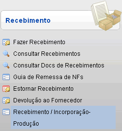
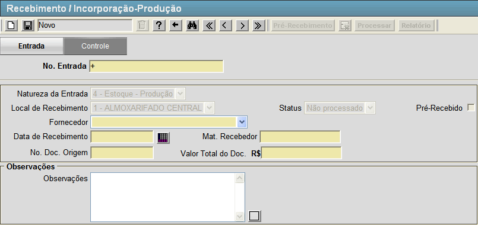
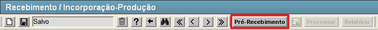
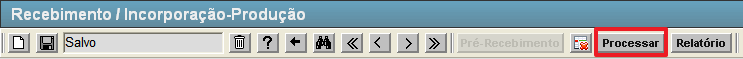

Consultar Recebimentos [ Voltar ]Utilize este formulário para realizar recebimentos e incorporação de produção para o Almoxarifado Central.Para acessá-lo, vá ao menu "Recebimento - Recebimento" da tela inicial e clique em "Recebimento / Incorporação-Produção". 
Ao clicar no menu, a seguinte tela será exibida: 
Execute os passos abaixo para realizar o recebimento: 1º Passo: preecha os campos do formulário. Lembre-se que campos amarelos são obrigatórios.
Caso todos os campos estejam preenchidos corretamente, clique no botão  [Salvar] para armazenar as informações. [Salvar] para armazenar as informações.2° Passo: preencha a grade de produtos com os dados dos produtos da entrada. Assim que é salva as informações, aparece uma grade para a inserção dos produtos relacionado ao recebimento. Conforme figura abaixo.  Preencha os dados dos produtos em questão.
[Salvar] para armazenar as informações sobre os produtos.3º Passo: clique no botão [Pré-Recebimento] para confirmar a entrada. Conforme figura abaixo.  4º Passo: clique no botão  [Processar] para finalizar o recebimento da entrada. Conforme figura abaixo. [Processar] para finalizar o recebimento da entrada. Conforme figura abaixo. |
 [Data] para selecioná-la a partir de um calendário.
[Data] para selecioná-la a partir de um calendário.
 [Pesquisar]
para selecioná-lo por meio de uma listagem contendo todos os produtos
cadastrados e permitidos para o Almoxarifado Central.
[Pesquisar]
para selecioná-lo por meio de uma listagem contendo todos os produtos
cadastrados e permitidos para o Almoxarifado Central.